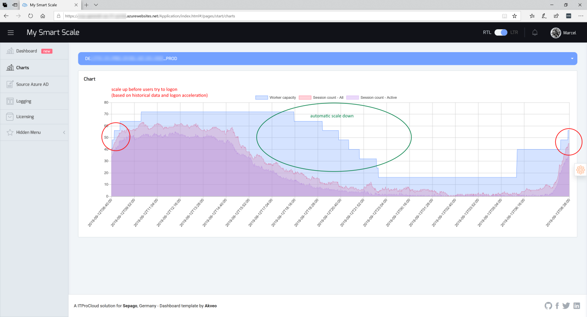

Announcing the community version of "Project MySmartScale"
Windows Virtual Desktop is released and gateways around the world are available - even in Europe which cause in a low latency - perfect.
Windows Virtual Desktop supplement the current solutions on the virtualization market like Citrix Application Virtualization and VMware Horizon. It’s focused on running as-a-service in the Azure cloud and it’s very cost-efficient compared to the other vendors. Of course: The tools and the administrative capabilities for WVD/AVD differ from the others - till now.
But there is still a niche that is not yet filled - until today. The VMs are running permanently even if no users using the environment which leads to avoidable costs. But there is a solution:
Announcement of the community version of Project MySmartScale 
“Project MySmartScale” starts and smartly deallocates session hosts for WVD. It learns about the user’s behavior and can actively logoff unused sessions at the right time to save compute power – and money. The solution is 100% based on Azure platform services and fits into the whole “as-a-service” story. But starting and stopping session hosts is not as easy as it sounds: To have the right amount of session hosts ready before users try to login in the morning you must predict the user behavior. And this is what “Project MySmartScale” does:
- Predict the logon count over time based on historical data
- Predict the logon count over time based on the acceleration of logons
- Start the sessions hosts a few minutes before they are needed
- Stop/deallocates unused session hosts if they are not needed
- …

Today I make this solution available via GitHub. You can easily deploy the solution into your Azure subscription and start to scale your VWD environment based on the usage. This can save up to 60-70% of the costs compared to a 24/7 pay-as-you-go model.
Side-Note: It also scales a Citrix XenApp / Virtual Apps and Desktop environment in Azure without using Citrix Cloud (for IaaS).
The free community version supports up to 5 VMs.
Feel free to use it:
https://github.com/MarcelMeurer/Project-MySmartScale
Note: The legal owner of this solution is sepago Gmbh, Dillenburger Str. 83, 51105 Cologne, Germany - https://www.sepago.com